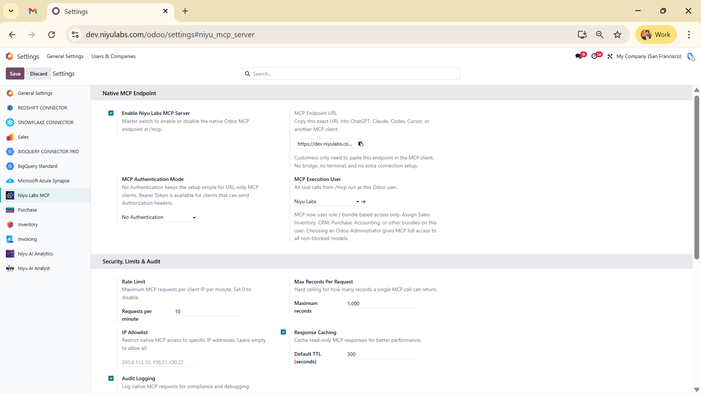
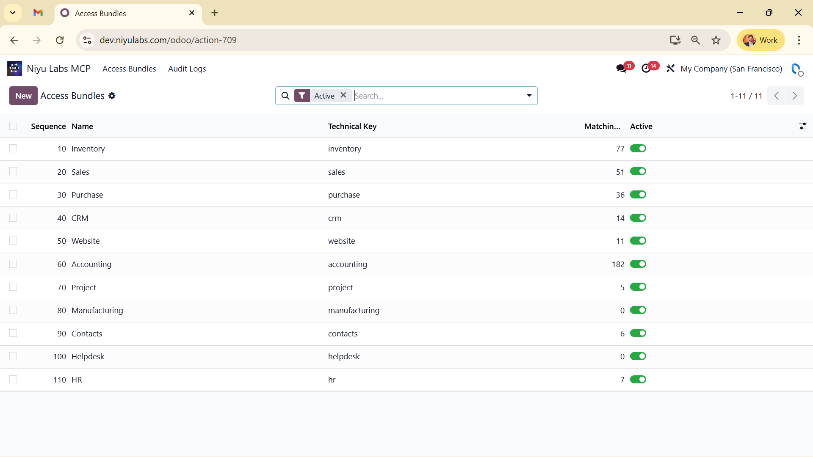
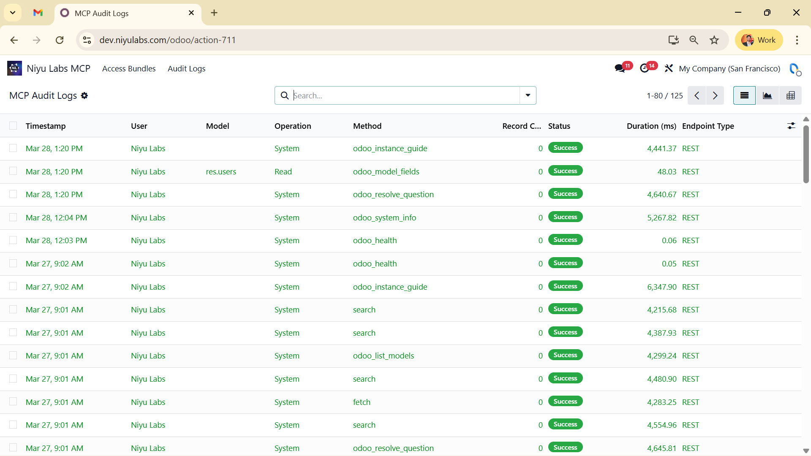
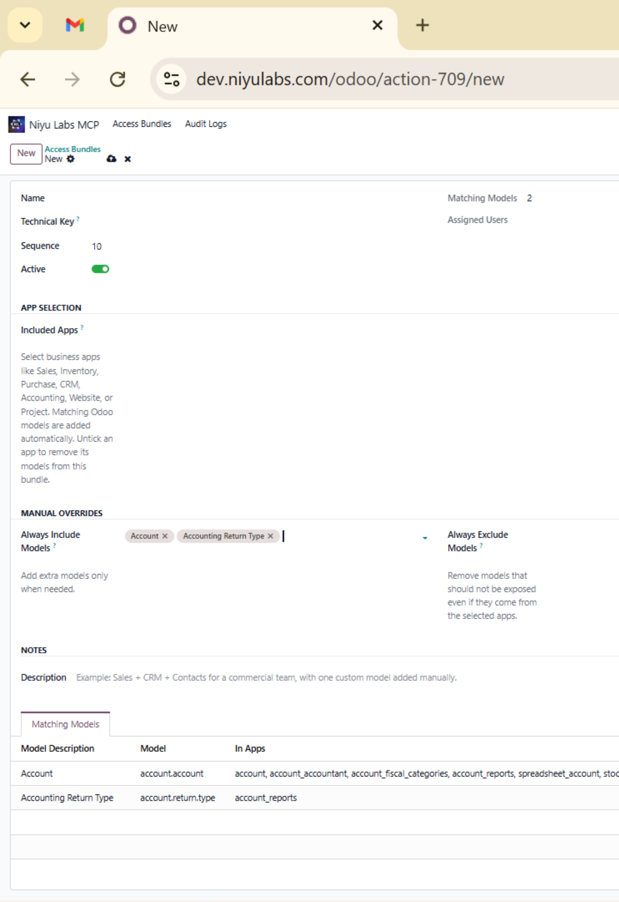
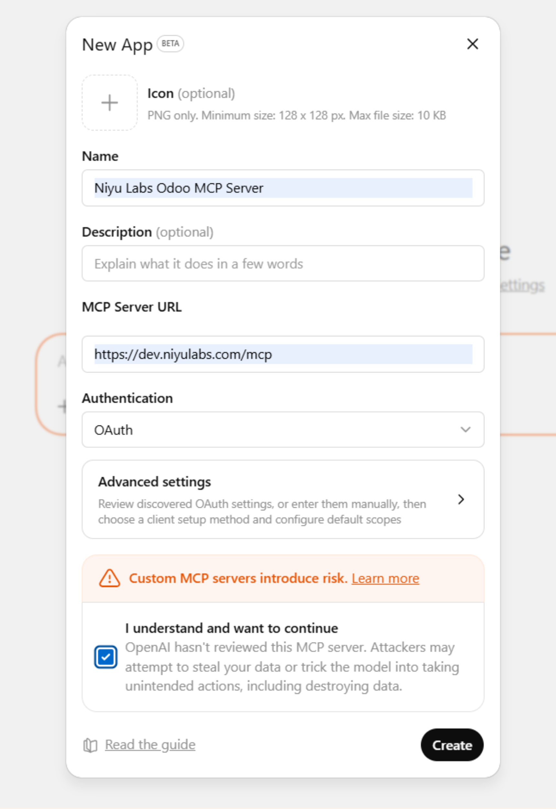
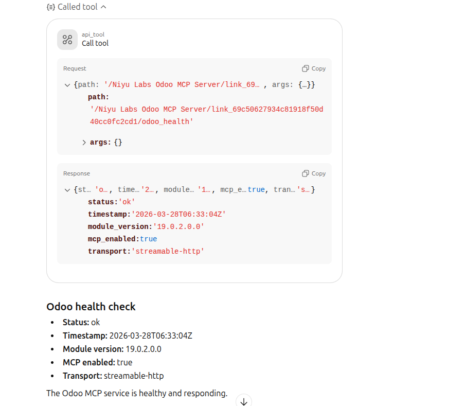

Odoo business concepts live across technical models, custom fields, access rules, companies, warehouses, journals, and workflows. Niyu MCP turns that into discoverable tools, resources, prompts, and safe actions.
Read-only defaults, execution-user permissions, access bundles, sensitive-field filtering, forced-domain enforcement, bearer auth, allowed origins, and disabled generic method calls protect real data.
Use business-friendly bundles such as Sales, CRM, Inventory, Purchase, Accounting, Project, Website, Helpdesk, Manufacturing, and Contacts instead of manually guessing every technical model.
"Copy the endpoint, generate the token, assign bundles to the execution user, and let AI answer real Odoo questions while permissions stay under your control."
Enable the native MCP server, choose the execution user, generate the bearer token, configure allowed origins, and copy remote or local Cursor configuration directly from Odoo settings.

Create access bundles for Sales, CRM, Inventory, Purchase, Accounting, Website, Project, Helpdesk, Manufacturing, and Contacts. Matching models are computed automatically, while manual include/exclude controls handle special cases.

The MCP execution user determines what AI clients can see. Audit logs capture successful calls, denied calls, failed authentication, tool names, models, records, client details, and timestamps.

Expose a clean `/mcp` endpoint for hosted clients with Streamable HTTP behavior and bearer token support.
Copy remote config or STDIO bridge config with command, args, env variables, and safe mutation toggles.
Read-only by default, with write/create/delete enabled only when explicitly assigned through users and bundles.
Expose Odoo by business function instead of raw model guessing, while keeping advanced manual overrides.
Verify endpoint readiness, execution user, exposed models, generic method-call status, and client configuration.
Track successful calls, denied calls, failed auth, model usage, client names, and operational activity.
Block risky fields such as passwords, tokens, secrets, API keys, sessions, and credentials from MCP exposure.
Ship safer MCP prompts and Odoo resources so AI clients understand what the server can do.

Bundle logic handles normal app access, while advanced admins can include or exclude specific models for special cases.

Secure the MCP entry point with bearer authentication, execution-user control, and client-friendly copy buttons.
Review usage patterns, check tool calls, monitor failed attempts, and keep MCP activity visible.

Give admins a clear view of endpoint readiness, setup status, and troubleshooting details.
No. It is built for MCP clients in general, including ChatGPT, Claude, Cursor, Codex, VS Code, and other tools that can connect to MCP servers.
Yes. The module provides Cursor-ready remote MCP configuration and a local STDIO bridge option for development or localhost Odoo instances.
No. Access bundles are designed around business apps such as Sales, CRM, Inventory, Purchase, Accounting, Project, and Helpdesk.
The execution user, assigned bundles, Odoo ACLs, record rules, forced domains, field filters, permission presets, and audit logging control what clients can access.
Yes. App-based bundles handle the main setup, and admins can manually include or exclude models when a customer workflow needs tighter control.
Yes. The diagnostics endpoint helps identify missing tokens, disabled MCP status, incorrect execution user, zero exposed models, and client configuration issues.